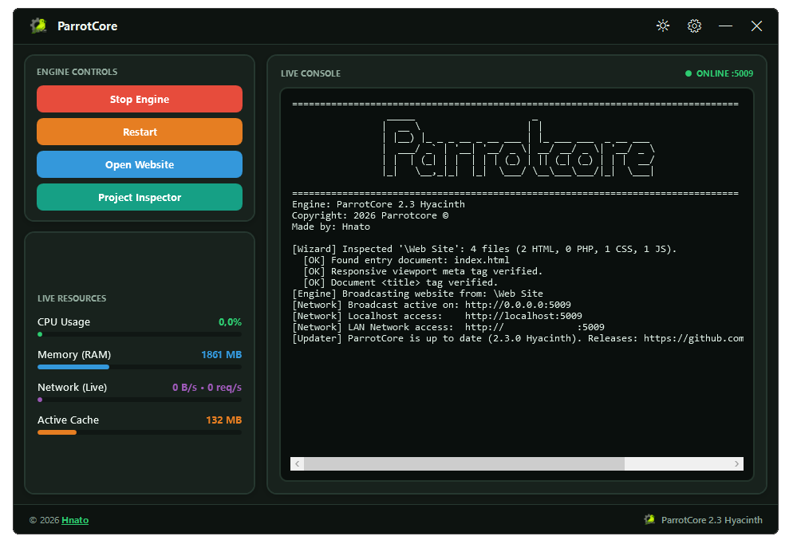
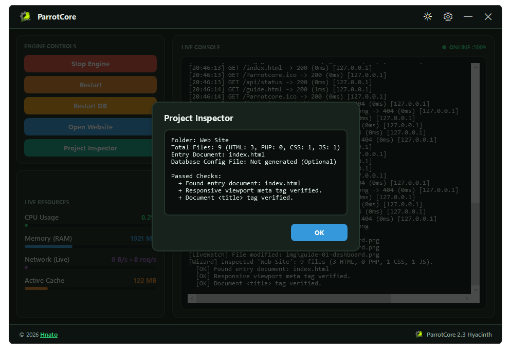
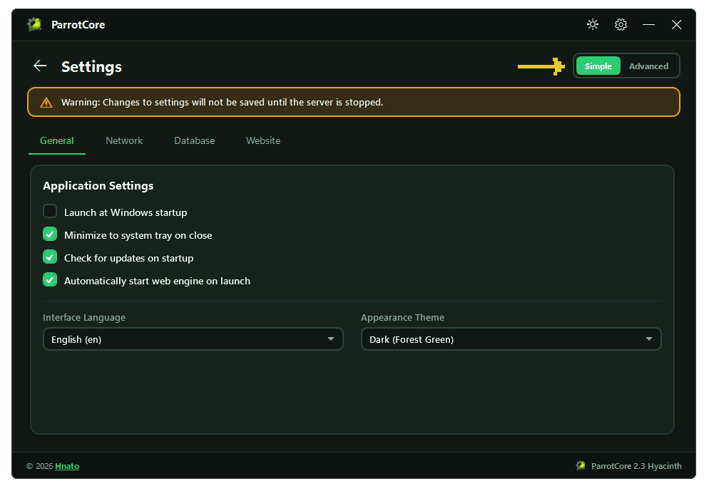
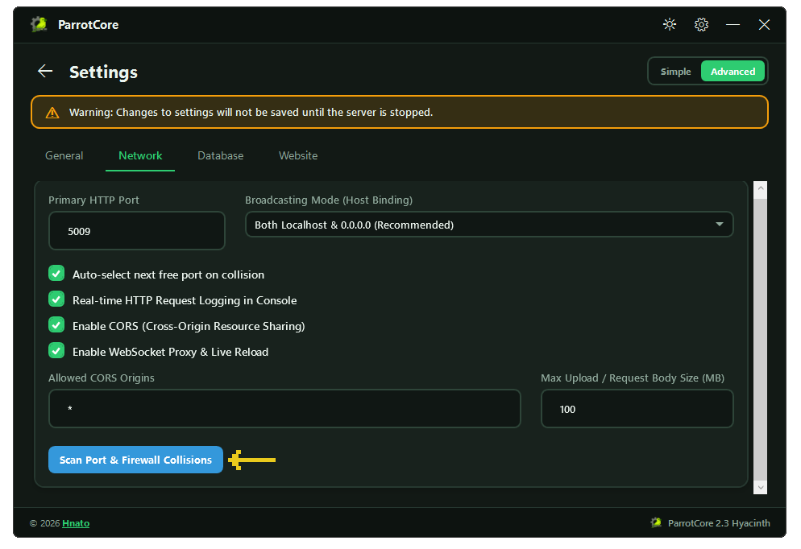
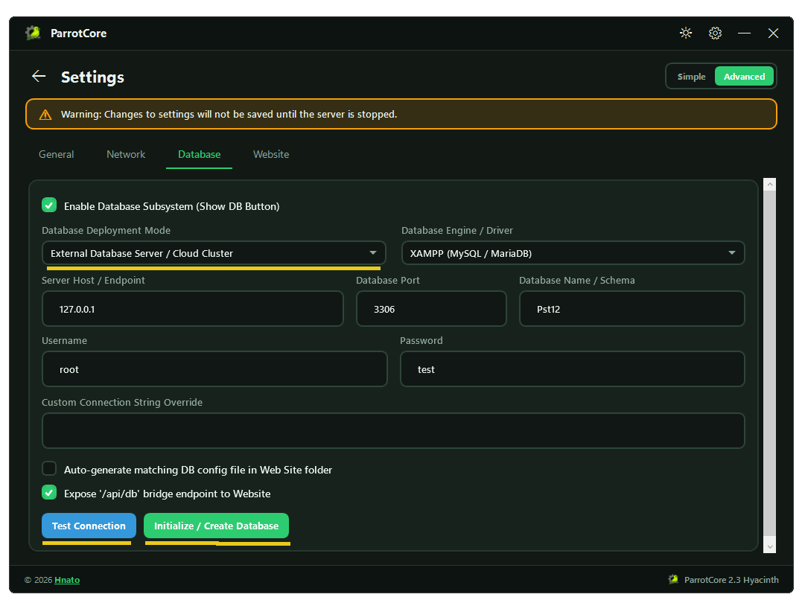
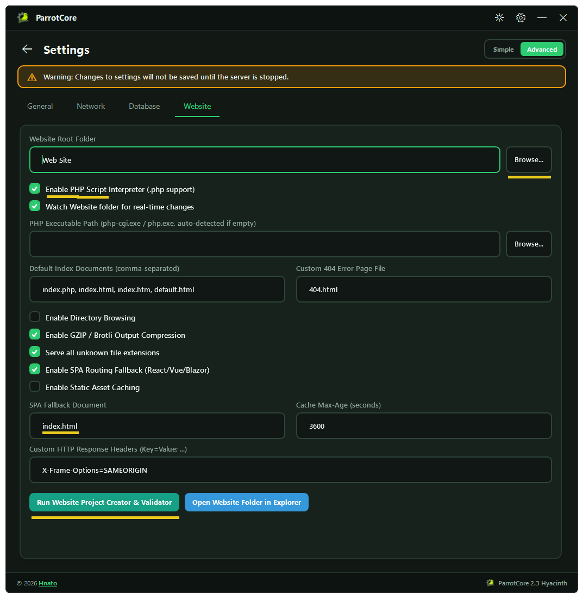

Website Engine - Comprehensive User & Developer Guide
Everything you need to know about hosting static and dynamic websites, running PHP applications, connecting to local or cloud databases, broadcasting over LAN, and optimizing performance on Windows 10 & Windows 11.
Dashboard Overview & 3-Panel Layout
The main workspace is engineered for clarity, low resource consumption, and instant feedback. It is divided into three specialized panels:
- Panel 1 Engine Controls (Top-Left, Compact): Houses up to five
color-coded action buttons that adapt dynamically to the engine's state:
Start Engine(Green) /Stop Engine(Red): Starts or stops the HTTP web server immediately.Restart(Orange): Appears while the server is running to perform a clean hot-restart.Configure Database(Purple) /Restart DB(Amber): Opens Database Settings if unconfigured, or restarts the active database connection pool.Open Website(Blue): Launches your default system browser pointing to eitherhttp://localhost:PORTor your active LAN IP address.Project Inspector(Teal): Audits your website folder for missing entry files, viewport tags, PHP readiness, and optional database integration.
- Panel 2 Live Resources Monitor (Bottom-Left): Displays real-time,
instantaneous metrics sampled every second without disk overhead:
- CPU Usage (%): Current processor load of the engine right now.
- Memory (RAM): Current working set memory in megabytes (MB).
- Network (Live): Instantaneous transfer rate (
B/s,KB/s,MB/s) and requests per second (req/s). Drops back to0 B/s • 0 req/simmediately when idle. - Active Cache: Current in-memory cache allocation held in RAM.
- Panel 3 Live Console (Right Side, Full Height): Displays the startup banner and real-time logs for HTTP requests, database connections, PHP warnings, and live file modifications.

Hosting Your Website & Custom Folders
By default, the engine serves files from the Web Site folder located next to the
executable. However, you can select any directory on your computer:
- Option A: Default Folder: Copy your
index.html,index.php, CSS stylesheets, JavaScript bundles, and images into theWeb Sitedirectory. - Option B: Any Folder on Disk: Open Settings → Website, click Browse... next to Website Root Folder, and choose any project folder on your PC.
- Verify with Project Inspector: Click Project Inspector on the dashboard to view an in-app modal audit of your entry document and assets.
Parrotcore.ico as its favicon out of the box.

Simple Mode vs. Advanced Mode
In the top-right corner of the Settings screen, switch seamlessly between Simple Mode and Advanced Mode:
| Feature Area | Simple Mode (Beginner-Friendly) | Advanced Mode (Full Control) |
|---|---|---|
| General | Windows startup, Minimize to tray, Update check, Language (7 languages), Dark/Light theme | Same as Simple Mode |
| Network | Primary HTTP Port, Broadcast Mode (Localhost /
0.0.0.0), Auto-fallback port, Request logging, Port & Firewall
Scanner
|
Adds CORS toggle, Allowed CORS Origins, WebSockets & Live Reload, Max Request Body Size (MB) |
| Database | Enable DB toggle, Mode selector (SQLite / Local MariaDB / External), dynamic connection fields, Test & Initialize buttons | Adds Custom Connection String override, Auto-generate adapted DB config file
toggle, REST API bridge (/api/db) toggle |
| Website | Website folder picker (Browse...), PHP Interpreter toggle (.php),
Live file watcher, Project Inspector & Open Folder buttons |
Adds Custom PHP binary path picker, Default index files, Custom 404 page, Directory browsing, Gzip/Brotli, SPA Fallback routing, Cache Max-Age, Custom HTTP headers |

Network Broadcasting (Localhost vs. 0.0.0.0) & Diagnostics
Under Settings → Network, control how your website is broadcast across your machine and local network:
- Both Localhost & 0.0.0.0 (Recommended): Accessible via
http://localhost:5009on your PC and via your LAN IP address (e.g.,http://192.168.1.25:5009) for phones, tablets, and other PCs on your Wi-Fi/LAN. - Localhost only (127.0.0.1): Restricts access strictly to your local machine.
- Network Broadcast (0.0.0.0): Binds to all network interfaces and opens your LAN IP directly when clicking Open Website.

Built-In Serverless SQLite Database & REST API Bridge
When Built-in Local SQLite Engine is active in Settings →
Database, the engine manages a zero-configuration SQLite database at
Engine/Data/parrotcore.db. When Expose '/api/db' bridge endpoint is
enabled, your frontend JavaScript can store and query data directly:
Local MariaDB / XAMPP & External Cloud Databases
The Database tab dynamically adapts its input fields based on your selected deployment mode and engine:
- Built-in Local SQLite Engine: Shows only the SQLite file path and a Browse... button.
- Local MariaDB / XAMPP Instance: Reveals the
mysqld.exepath picker, Host/Port/Database/User/Password fields, and the Launch Local MariaDB / XAMPP button. - External Database Server / Cloud Cluster: Supports
MariaDB, MySQL, PostgreSQL (port
5432), Microsoft SQL Server (port1433), Microsoft Azure SQL (1433), and MongoDB (port27017).

PHP Scripting & Backend Integration (.php)
With Enable PHP Script Interpreter (.php support) enabled in Settings
→ Website, the engine executes .php files automatically and
injects your active database credentials as environment variables:

Auto-Save Rules, Portability & Version Upgrades
- Full Windows 10 & Windows 11 Portability: All paths inside the
application folder are stored as portable relative paths (
Web Site,Engine/Data/parrotcore.db), so the entire application works seamlessly on any PC. - Safe Upgrades & Inno Setup Preservation: When installing a newer
release from GitHub
Releases, your settings in
Engine/Data/parrotcore.config.jsonare preserved automatically.